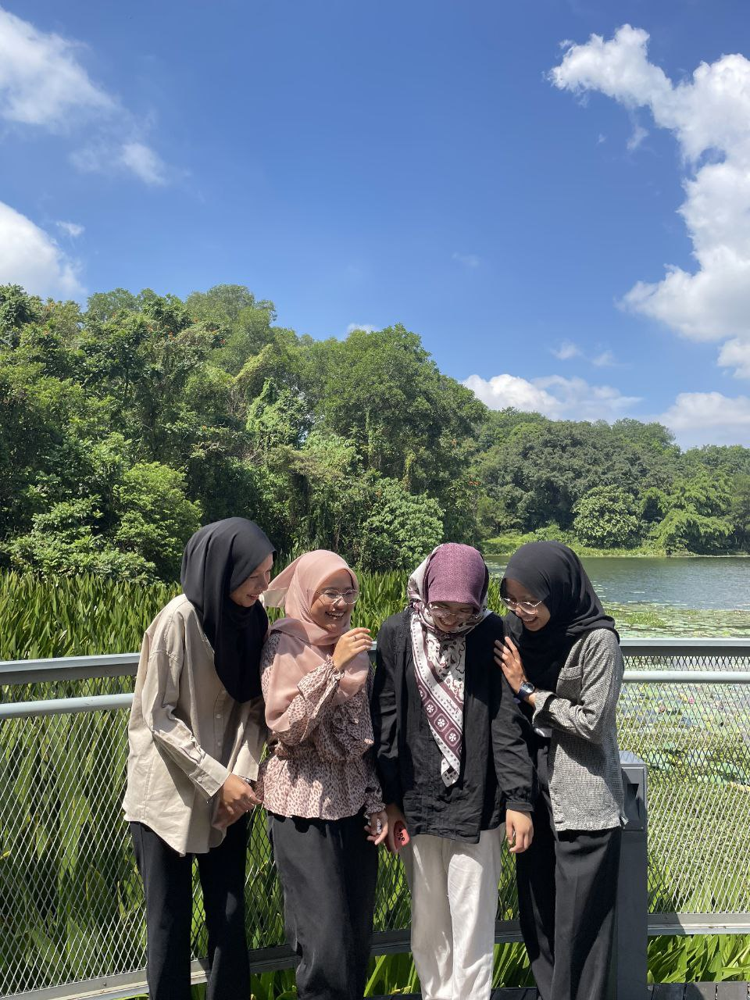

‚ãÜ.Àöü¶ã‡ºò‚ãÜWELCOME TO ATHIRAHIMNIDA WEBSITE‚ãÜ.Àöü¶ã‡ºò‚ãÜ
Hi,welcome to my website!
✦•┈๑⋅⋯ ABOUT ME ⋯⋅๑┈•✦
 Iam Athirah binti Abd Hamid, a passionate and ambitious 20 years old with a diverse background. (Born on 24 February 2004), at Plaza Medical Centre in Kajang. I have a twin named Ajirah binti Abd Hamid. As the fourth child in a family of six, I has always been surrounded by love, support, and the unique dynamics that come with a large family.
Since childhood, I have shown an interest in education and a desire to inspire others. My dream of becoming a lecturer reflects my dedication to learning and sharing knowledge. My inspiration to become a lecturer is my father, Abd Hamid Bin Hj Razali. This aspiration not only showcases my ambition but also my commitment to contributing positively to society. I believe that education is a powerful tool that can change lives, and she aims to play a role in shaping the future of her students.
In my free time, I enjoy my hobbies which include drawing and watching movies. When I have free time, I will go out with my mother to buy canvas boards, as I prefer to draw on them. Apart from that, watching movies is also my hobby. Furthermore, during semester breaks I will invite my family to watch hit movies according to the genre we are interested in.
Iam Athirah binti Abd Hamid, a passionate and ambitious 20 years old with a diverse background. (Born on 24 February 2004), at Plaza Medical Centre in Kajang. I have a twin named Ajirah binti Abd Hamid. As the fourth child in a family of six, I has always been surrounded by love, support, and the unique dynamics that come with a large family.
Since childhood, I have shown an interest in education and a desire to inspire others. My dream of becoming a lecturer reflects my dedication to learning and sharing knowledge. My inspiration to become a lecturer is my father, Abd Hamid Bin Hj Razali. This aspiration not only showcases my ambition but also my commitment to contributing positively to society. I believe that education is a powerful tool that can change lives, and she aims to play a role in shaping the future of her students.
In my free time, I enjoy my hobbies which include drawing and watching movies. When I have free time, I will go out with my mother to buy canvas boards, as I prefer to draw on them. Apart from that, watching movies is also my hobby. Furthermore, during semester breaks I will invite my family to watch hit movies according to the genre we are interested in.
Overall, I hope that with the energy and knowledge I have gained throughout my life, it can benefit everyone. Not only that, I also hope that I can achieve my goals and dreams. As I continue my journey, there is no doubt that I will have a meaningful impact on the lives of others, inspiring them through her teaching and artistic endeavors.
ÀöÀñìç¢÷¥‡ªãüå∑Õô÷í‚úßü©∑Àö.üéćºò‚ãÜ"Traces of Memories with Friends"ÀöÀñìç¢÷¥‡ªãüå∑Õô÷í‚úßü©∑Àö.üéćºò‚ãÜ

üìåI am a student studying at Smk Bandar Tun Hussein Onn 2. During form 4 and 5 I majored in economics. It was very exciting to share my experience during on my highschool era.my experience during my time at Bandar tun hussein onn national high school 2. I made many friends there and are still close until now. Taking the field of economics is very challenging because I don't have much experience. However, I feel fun and happy to learn it because for me it easy.
I would go to and from school on foot. My friend and I, who were my neighbors, would walk to school at 7.05 am since the distance to school was close to home. I still remember every time I came home from school, my friend and I would go to a stall to buy iced tea for RM2 and buy ghost chicken rice. The stall was called ghost chicken rice because the food they sold was very popular. Not only that, sometimes we would buy coconut shake.Cococut shake is very famous food stall among the students.After the end of the school,every student btho will go there to grab coconut shake.
After completing my studies at Smk Bandar Tun Hussein Onn 2,I decided to register for a course that interests me at 3 universities. The first course I tried to apply for was business at KPTM. I decided to continue there because the distance to my home was very close. Not only that, I also chose a multimedia course at UniKL. And both universities I got successful results. However, I am thinking of continuing my UPU results. Alhamdulillah I was able to continue my studies with my UPU results. I continued my studies at UITM Rembau, Negeri Sembilan Branch with the Faculty Information Management .

As you guys can see, here are my friends which are Adlina, Syameera and Nurien and me.I first met them during semester 1 at UiTM Rembau. What was interesting was that all four of us were in the same class. My memory is still fresh, where I still remember the moment of our introduction, since Adlina and I first got to know each other because we both lived together for semester 1 and semester 2. When Adlina and I met Syameera and Nurien during semester. 1, we decided to go to class on the first day together. Then, we gathered at the cafe and while waiting for the others, we started getting to know each other. I am really sure, after finishing my diploma I will miss them because they are like my siblings. Their behavior makes me comfortable to study here. Not only that, working with them makes me comfortable to do tasks together.
The behavior that I like and will miss is Adlina, she is a good person, caring. She brightens up the atmosphere, always thinks before acting and she likes a leader for project assignments because she has a disciplined nature. Next,is syameera. Someone who is mature, funny, hardworking and I will definitely miss her laughter that enlivens the atmosphere.Last but not least,Nurien.
First time I had a friend named Nurien with a spelling with E before N. The name and spelling are new and interesting to me. Nurien is a good, understanding person, and she is also someone who will liven up the atmosphere because she asks a lot of questions hehe.
One of the most beautiful aspects of friendship is that it teaches us to care. Through our friends, we learn to listen, to forgive, and to put someone else's needs before our own. Friendships teach us empathy by allowing us to see the world through someone else's perspective. When a friend is going through something tough, we feel it too. And when they achieve something great, their joy becomes our joy.
When I was in the university world, I was exposed to many different characters. Of course, we always have to adapt even though it takes time because friends at school and friends at university are different.
My favourite petìÜù ìÜü ìÜû üê¢

My family and I really like raising fish. We have 3 aquariums and 1 fish pond. We used to raise an arowana fish but it died when I was 5 years old. Not only that, I have a fish that I love the most but it was sad because it died.This is my first own to have a fish and live for a long period of time which is for 3 years. I love this fish because when I was in Form 2 I bought it for my science project and then I raised it and it is the longest-lived fish.Based on the picture, it is the fish that I was raised and we call that fish is Se.Se is one of the fish that I put and raised in aquarium.The reason we decide to name the fish is Se because
it refers tu "Seekor"
Beside, There are other animals that we protect besides fish, which are turtles. We used to have two turtles. We bought those turtles because my brother is interested in protecting turtles and he was influenced by my paklong since he also raised a turtle at home.Since we have a pond,we decide to put our turtles to the fish pond when he grew up.
Unfortunately, in 2022, the two turtles that we protected have disappeared. I was quite surprised to hear that our turtles are missing since we put our turtles in the fish pond. Of course every month end we will clean the fish pond so that it looks clean and beautiful.The reason I love to have a fish instead of cats,rabbit or because I have eczema and I a bit scare with them.
Sometimes if I hold a furry animal it will cause inflammation and itching. It makes my skin worse. So this is one of the reasons why I don't keep animals like cats and others. Since I rarely hold animals like this, it makes me scared and not used to them.
Inspirational life quotes
First quotes
"You have to believe in yourself when no one else does know you"
"Dont judge a book by its cover"
PSM, KPPIM
Today temperature is 21o
My initial is ATHIRAH BINTI ABD HAMID AT
{kind=link}